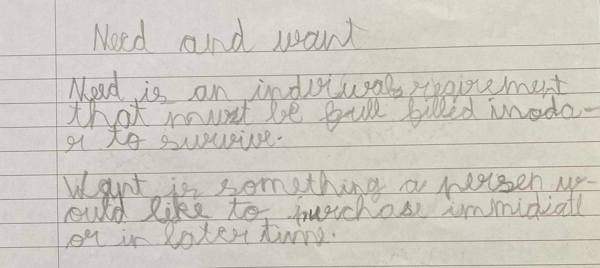

- Needs and Wants
-
The way we adults have working-from-home, children have online classes. It's a thing now. My son attends them daily and I happened to overhear one session.
Teacher: “Children, you know what happened yesterday evening. I visited my parents home for dinner. When I was going back to my home, I was thinking it was hot day today and won't it be so nice to have an icecream? And then I was wondering whether it is a need or a want. What do you think children? Was it a need or a want?"
Kids: “Need” "Need" “Want” “Need” “Ma’am, I think it is a need” "Ma'am, Ma'am ...."
Some discussion ensued. Finally, they all agreed that the craving for ice cream was a want.
The following assignment was sent to Google Classroom later that evening:
Give three examples of need and wants. Write in your own words what is a need and what is a want
Here is what Saatvik wrote:
It was heartening to watch the session. It was conducted well - Teacher's narration had kept the kids spell bound.
Spellings weren't given importance. I don't think the children have read or written those words earlier. Only heard them. And they just made up the spelling based on how on how the words sound - "inodar to survive" :-)